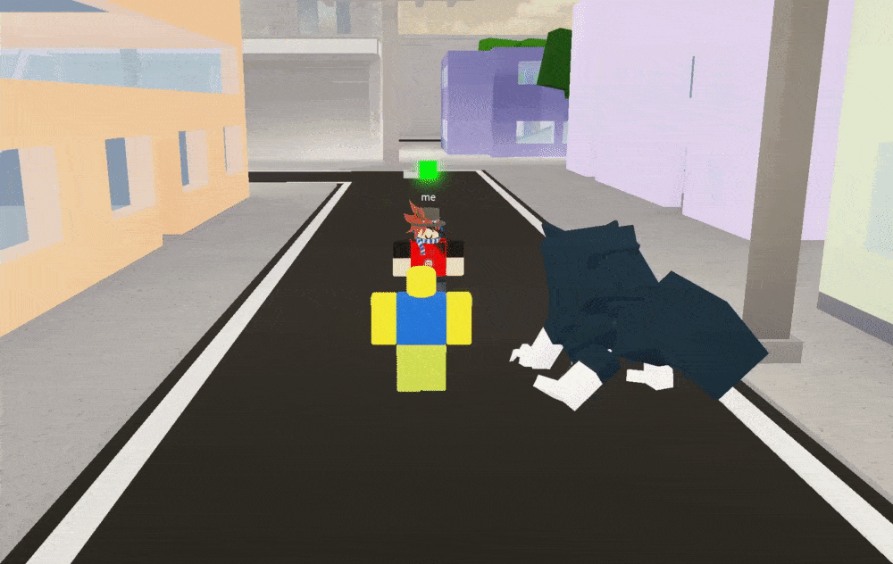

Health: 85 HP
Base Moveset
[1] - Rabbit Escape
Blockable from all Directions, Bypasses Ragdoll, Cancellable
Cooldown: 13 Seconds
The user of the “Ten Shadows” cursed technique summons a flurry of rabbit shikigami to overwhelm the opponent.
Rabbit Escape is cursor/shiftlock aimed. You can also attack the opponent while they are being attacked by the technique.
If you are ragdolled while Rabbit Escape is active, it will immediately stop.

[2] - Nue
Unblockable (but able to be dodged), Bypasses Ragdoll, Cancellable
Cooldown: 20 Seconds
The user of the “Ten Shadows” cursed technique summons a bird shikigami with the ability to conduct electricity to target their opponent. When hit by Nue, the opponent is electrocuted and dragged a small distance while Nue flies away.

[2] (Special) - Nue (Flight)
Same properties as Nue
Cooldown: 20 Seconds
Keybind: 2 + R (press R while Nue is on windup)
The “Ten Shadows” user grabs hold of Nue’s feet to go airborne for a small duration.

[3] - Toad
Blockable, Bypasses Ragdoll, Cancellable
Cooldown: 20 Seconds
The user of the “Ten Shadows” cursed technique summons a toad shikigami that stuns their opponent by utilizing their tongue. Toad then reels the opponent close to the user.
Toad is cursor/shiftlock aimed.

[3] (Alt.) - The Well’s Unknown Abyss
Blockable, Bypasses Ragdoll, Cancellable
Cooldown: 20 Seconds
You will still be able to use The Well’s Unknown Abyss even if Nue is on cooldown.
Keybind: 3 + 2 (press Nue while Toad is on windup)
By combining the powers of Nue and Toad, the “Ten Shadows” user creates multiple winged toad shikigami. The shikigami grab hold of the opponent to then fling them in the air.

[4] - Divine Dog: Totality
Blockable from all Directions, Bypasses Ragdoll, Cancellable
Cooldown: 20 Seconds
The “Ten Shadows” user combines the strengths of both demon dogs to summon a large canine shikigami that holds immense destructive power. When summoned, Totality will follow the user around and will be able to attack opponents when instructed to do so.

By using 4 again while targeting an opponent using your cursor/shiftlock, Totality can be sent to attack the player selected. Totality can attack for a max of three times before it is desummoned.
